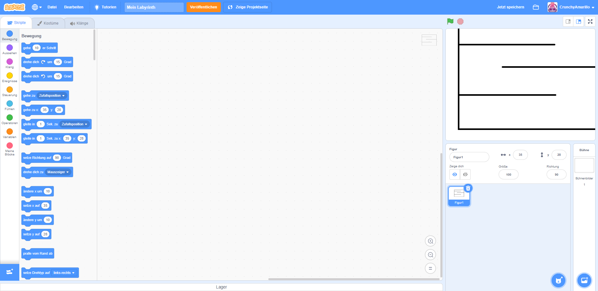
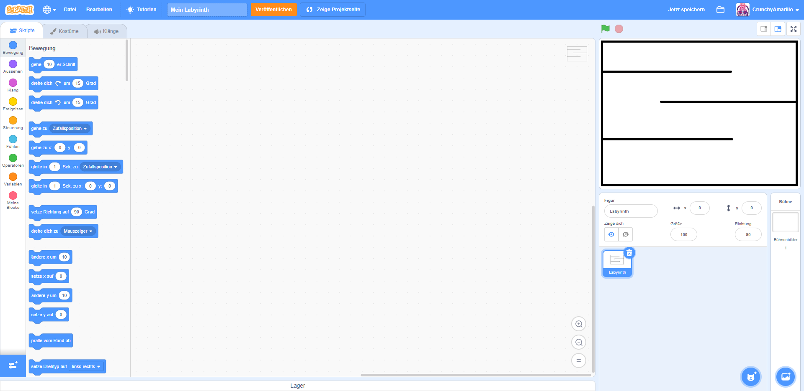
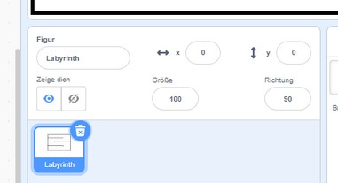

Wenn du dein Labyrinth fertig gemalt hast. Dann wechselst du vom Übersichts-Tab "Kostüme" zurück zum Tab "Skripte". Du siehst nun wieder eine leere Oberfläche. 
Im Vorschaufenster(3.) siehst du nun dein Labyrinth. Es sieht noch etwas verschoben aus. Du musst es also noch richtig platzieren. Dazu kannst du es entweder mit der Maus anklicken und an die gewünschte Stelle schieben, oder du stellst im Figuren-Fenster einfach die Werte für "x" und "y" jeweils auf den Wert "0". 
Wenn du möchtest, dann kannst du deinem Labyrinth nun noch eine sinnvolle Bezeichnung (z.B. "Labyrinth") geben. Das hilft dir später beim Programmieren, die Figur schneller wieder zu finden. Nutze dafür das entsprechende Feld in der Figurenübersicht. Du kannst jeden beliebigen Namen für dein Labyrinth vergeben. 
Glückwunsch: Dein Labyrinth ist jetzt fertig vorbereitet. Jetzt kümmern wir uns um die Figur, welche sich darin bewegen soll.